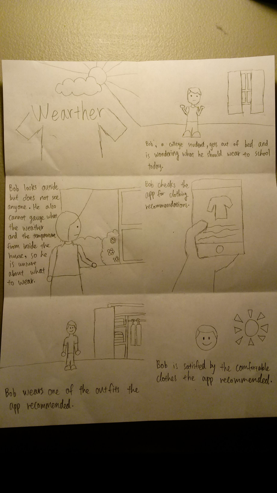
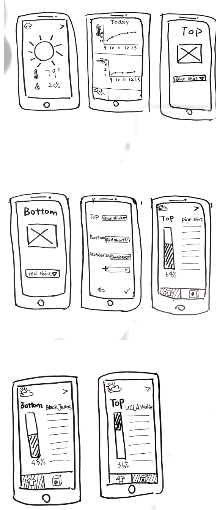

CloStat provides users with clothing recommendations based on the up-to-date weather information. It is a virtual closet that let the user keeps track of the status of clothing (clean or worn) to allow a more accurate recommendation.
BrainStorm

In my Human-Computer Interaction (HCI) Programming Studio class (Cogs 121), me and three other classmates brainstormed ideads about what mobile web application to make that centered around the theme of interacting with real world data. We each brainstormed separately, then came together to pitch our ideas to each other. We all liked the idea of having something to narrow down on what clothes we should wear from day-to-day because California's ever-changing weather and temperature made it hard for us to wear something we like while still enjoying the outdoor.
Paper Prototype

My group used paper prototype to design what would later be called Clostat. We mapped out each of the screens that will be displayed when the users click different buttons on the web app.